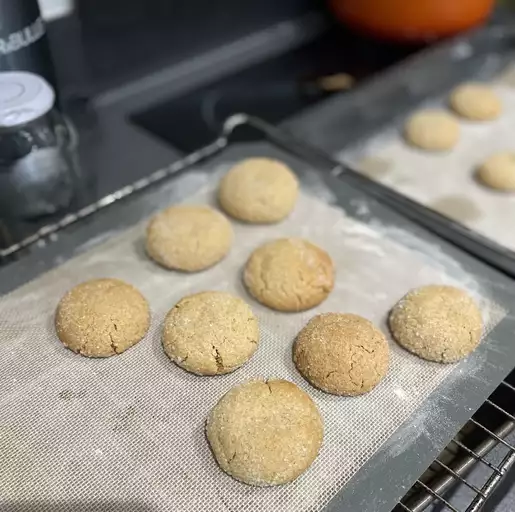

Garlicky Baked Brie

How to Make Big Soft Ginger Cookies
Big, soft, gingerbread cookies made with molasses, ginger, and other spices are a holiday favorite. This gingerbread cookie recipe for ginger cookies rolled in sugar is my oldest son's favorite. Store cooled cookies in an airtight container and they will stay soft for days.
Big Soft Ginger Cookies Ingredients
- Sugar
- Flour
- Spices
- Baking soda
- Salt
- Margarine
- Egg
- Molasses
How to Make Big Soft Ginger Cookies Step-By-Step
- Sift the dry ingredients together.
- Cream the margarine and sugar together. Beat in the egg, then add the water and molasses.
- Stir the dry ingredients into the wet ingredients until well-combined.
- Shape the dough into balls, roll the balls in sugar, and flatten them slightly.
- Bake in a preheated oven until almost set and cool on a wire rack.